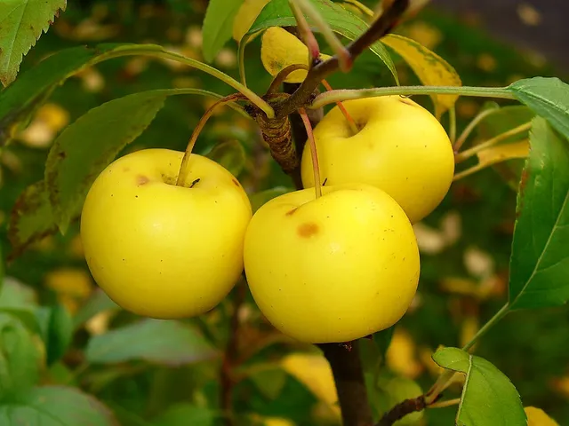

Wild fruit · Sep–Oct
Crab apple
Malus sylvestris
Also called Crab apple, Úll fiáin
Crab apple is a wild fruit you can forage from September to October across Ireland. Small wild apple tree of hedges and woods; hard, sour little apples.

When is crab apple in season in Ireland?
Crab apple is usually in season September to October. Timing shifts with weather, latitude and altitude.
Where does crab apple grow in Ireland?
Crab apple grows across Ireland. Regions: Munster, Leinster, Connacht, Ulster (Republic).
How do you recognise crab apple?
Small wild apple tree of hedges and woods; hard, sour little apples.
How do you harvest crab apple?
Collect fallen or easily picked apples in autumn; slightly underripe ones have the most pectin.
How do you eat crab apple?
Crab apple jelly, chutney; adds pectin to jams.
How do you store crab apple?
Jelly.
What is crab apple good for?
Vitamin C.
What can you cook with crab apple?
- Rowan and crab apple jelly: Bittersweet jelly for venison and lamb.
- Hedgerow jelly: Autumn hedgerow fruits cooked together and strained.
- Blackberry and apple tart: Irish plate tart of blackberries and apple, with cream.